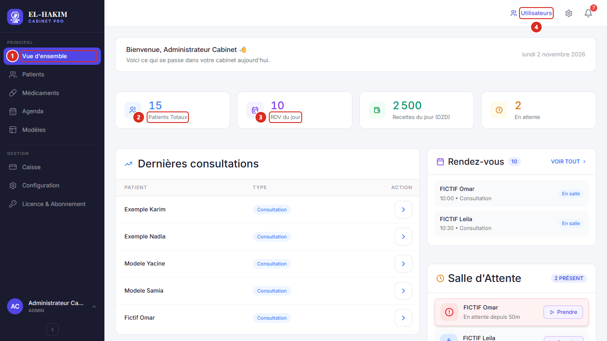

Démarrage rapide
1. Se connecter
- Double-cliquez sur EL-HAKIM PRO sur le Bureau.
- Saisissez votre UTILISATEUR et votre MOT DE PASSE, puis cliquez sur S'IDENTIFIER.
- Pour partir : cliquez sur votre nom en bas à gauche, puis sur Se déconnecter.
Premier démarrage : les identifiants de première connexion vous sont communiqués avec votre licence. Changez le mot de passe tout de suite (votre nom en bas à gauche › Modifier mot de passe).
2. L'écran principal

Le menu de gauche ouvre tous les écrans. Vue d'ensemble montre la journée : rendez-vous, recettes, salle d'attente.
3. Créer ou trouver un patient
- Trouver : Patients, puis tapez le nom ou le téléphone dans RECHERCHER. Cliquez sur le nom pour ouvrir le dossier.
- Créer : Patients › ＋ Nouveau patient › NOM, PRÉNOM, DATE NAISSANCE (JJ/MM/AAAA), SEXE › VALIDER LE DOSSIER.
4. Donner un rendez-vous
- Depuis le dossier : Planifier un rendez-vous › date et heure › Confirmer le rendez-vous.
- Depuis l'agenda : Agenda, vue Jour › clic sur un créneau libre › cherchez le patient › Planifier.
- Arrivée du patient : clic droit sur son rendez-vous › LE PATIENT EST ARRIVÉ. Il passe en Salle d'Attente.
Rendez-vous de 30 minutes, de 08h00 à 19h00.
5. Consultation (médecin)
- Vue d'ensemble › Salle d'Attente › Prendre, puis + Nouvelle consultation.
- Saisissez les constantes, choisissez le motif dans Observations, rédigez les Notes cliniques.
- Ordonnance : tapez le nom du médicament › cliquez sur le résultat › choisissez durée, quantité, posologie › Valider la posologie.
- Clôturer la visite › choisissez les actes › PAYÉ ou NON PAYÉ (DETTE) › VALIDER LE PAIEMENT.
- Soin en plusieurs séances : à chaque séance, cochez CE PAIEMENT FAIT PARTIE D'UN TRAITEMENT MULTI-SÉANCES (première fois : nom et PRIX TOTAL), puis saisissez le MONTANT VERSÉ.
6. Imprimer un document (médecin)
Dossier du patient › PROFIL MÉDICAL › Éditer › type de document (certificat, arrêt de travail…) › complétez › GÉNÉRER L'APERÇU › imprimez.
Papier : A5 pour l'ordonnance et tous les documents, sauf le compte rendu et les courbes de croissance (A4). Vérifiez le format dans l'aperçu avant d'imprimer.
7. À ne pas oublier
Faites une sauvegarde chaque semaine sur le serveur : Configuration › Sécurité › Générer la sauvegarde. Gardez le fichier sur une clé USB.
Le serveur reste allumé, avec EL-HAKIM PRO ouvert, pendant les heures d'ouverture. Les autres postes ouvrent l'adresse indiquée dans Configuration › Identité › ACCÈS RÉSEAU LOCAL.
Pour tout le détail : Guide d'installation et de configuration et Guide d'utilisation.